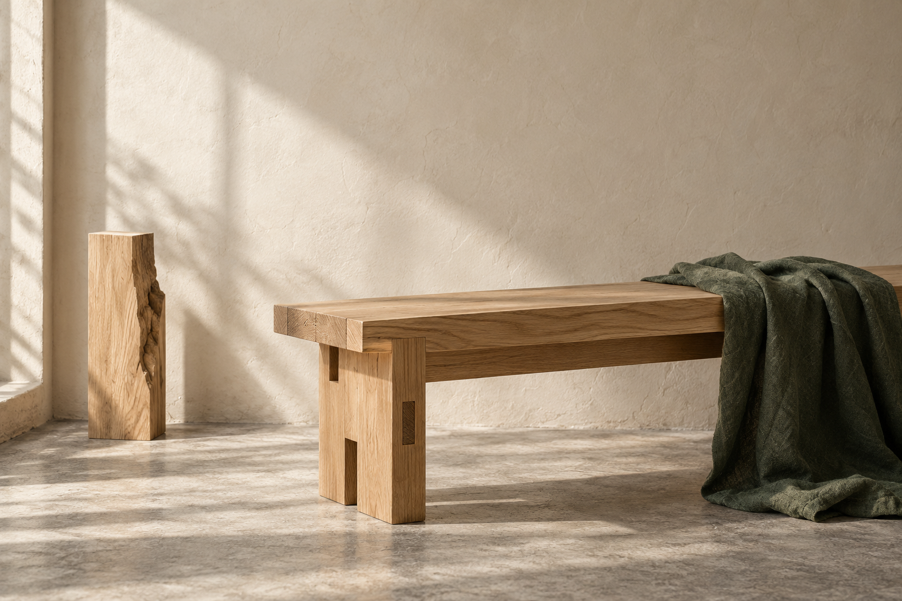

Purpose
Make lasting objects for people who want fewer, better things in their everyday spaces.
A CONSIDERED IDENTITY
Made slowly. Kept for years.

This editable brand book uses a fictional sample identity. Replace strategy, examples and imagery when adapting it for a client.
01 / BRAND PLATFORM
Objects for considered living
Make lasting objects for people who want fewer, better things in their everyday spaces.
Thoughtful homeowners and interior specifiers who value honest materials, precise workmanship and a direct relationship with the maker.
A small-batch studio where material, method and everyday usefulness receive equal care.
Work honestly. Explain simply. Make the details useful. Leave room for the material to speak.
02 / LOGO SYSTEM
Use the horizontal signature for documents, website headers and correspondence. Use the stacked version when the format is square.
Keep clear space equal to one quarter of the mark height on every side. Minimum horizontal width: 160 px on screen or 45 mm in print. Minimum mark width: 24 px or 8 mm.
Use color on paper, reverse white on a solid dark background, or the mono version. Never stretch, tilt, outline, add effects or place it on a busy image.
03 / COLOR
#3D5A45#E7E3D6#0E1114#C9A227Paper 60%, forest 25%, ink 10%, brass 5% is a useful starting balance. The accent is a small detail, not a background for every page.
Use dark ink on paper or paper on forest. Use brass as a decorative rule or small highlight, not for essential body text. Test contrast after changing the palette.
These are RGB values. A print supplier should confirm the CMYK conversion for the chosen paper and process.
04 / TYPOGRAPHY
Use a regular serif for short headings, quotations and considered statements. Let scale do the work. Avoid long blocks in capitals.
Use a practical sans-serif for body copy, labels, documents and interface text. Keep paragraphs short, line length comfortable and spacing consistent.
Fonts are referenced, not bundled. Choose fonts licensed for the client's intended uses and keep a fallback stack.
05 / MESSAGING
Exact. Unhurried. Human.
“Solid oak. Cut, joined and finished in small batches.”
“Tell us about the room it will live in.”
“Made slowly. Kept for years.”
“The ultimate luxury lifestyle solution.”
Vague superlatives, invented heritage, urgency without a reason, or claims the work cannot support.
Good objects earn their place through material honesty, everyday usefulness and careful construction. Use concrete detail to support that promise.
06 / ART DIRECTION
Natural light. Honest texture. Quiet architectural space. Show joints, grain, edges and the way an object meets everyday life. Leave room for the type.
Use a simple grid, generous margins and a small number of elements. Keep the mark in a consistent position. Restrained rules and clear hierarchy connect every format.
The supplied sample image was created with AI for this fictional identity. Replace it with approved client imagery for a real job.
07 / USE IT WELL
Logo exports, brand guidelines, agreed application designs, an email signature and a file guide. Keep one approved master set.
Use tokens.css and design-tokens.json as the shared source for colors, typography and spacing. Update these whenever the identity changes.
Confirm stock, trim, bleed, color conversion and final proof with the printer. The sample stationery PDF is a design proof, not a certified PDF/X file.
Replace example contacts, dates, prices and placeholder copy. Check permissions, image rights, font licensing, readability and every link.
Alex Morgan / Founder / Maker
hello@ateliernorth.example
ateliernorth.example